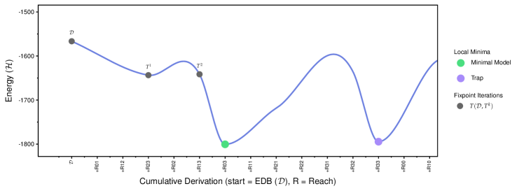
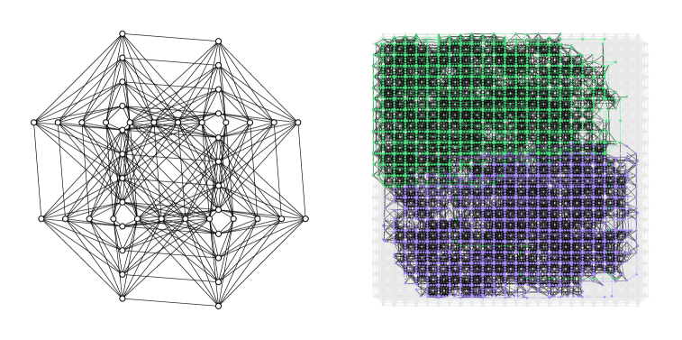

Per-stage correctness lemmas and a correspondence theorem for compiling Datalog to 2-local Ising models are verified in Lean 4.
Abstract
Quantum annealers solve problems by finding the lowest-energy (ground) state of a programmable physical system, a 2-local Ising model, whose energy function is the Hamiltonian. We compile recursive Datalog programs into such models so that the ground state projects onto the program's minimal Herbrand model. The compiler has four stages: binarization, grounding, reduction to a Min-Ones SAT formula, and Ising encoding. Each rule becomes an energy penalty on the one assignment that violates it, and a small uniform cost on every true atom selects the minimal model. We contribute both in theory and in practice with per-stage correctness lemmas and a correspondence theorem, verified in Lean 4, establishing that the ground state of the compiled model projects onto the program's minimal Herbrand model. We map the compiled models onto the topologies of commercial annealers and characterize, under classical and simulated-quantum annealing, whether and when that certified ground state is attained.
Problem
Quantum annealers minimize energy functions expressed as 2-local Ising models, but recursive bottom-up Datalog programs have not been compiled to such models with certified correctness. The challenge is ensuring the annealer's ground state corresponds exactly to a program's minimal Herbrand model.
Approach
A four-stage compiler transforms Datalog programs through binarization, grounding, reduction to a Min-Ones SAT formula, and Ising encoding. Each rule becomes an energy penalty on the assignment that violates it, with a small uniform cost per true atom selecting the minimal model. Per-stage preservation lemmas and a correspondence theorem are proved in Lean 4, and a Python reference implementation compiles and exactly solves small instances.

Figure 1: Energy along a one-atom-per-step walk for \mathit{nonlinear\_tc\_path}(4) : from the EDB \mathcal{D} through the fixpoint iterates T^{1},T^{2} (grey) to the minimal model (green), the global minimum of all 2^{19} assignments by exhaustive enumeration. Adding the six-atom unfounded set (purple) costs one \varepsilon per atom, and leaving that local minimum costs at least 79 ( W\Delta_{\mi
Results
The Lean 4 proofs establish that the compiled model's ground state projects onto the program's minimal Herbrand model. Compiled instances are mapped onto D-Wave Pegasus and Zephyr topologies, and solver recovery is characterized under classical and simulated-quantum annealing.

Figure 2: Two independently compiled reachability programs at the shipped machine’s scale. Left: each instance’s EDB, the Zephyr Z1 hardware graph ( 48 nodes, 280 edges). Right: both compiled programs, 1{,}778 logical spins, minor-embedded together into the ideal Zephyr Z12 generator ( 4{,}800 sites), occupying 3{,}489 physical qubits with longest chain 36 . One instance is green, the other purple